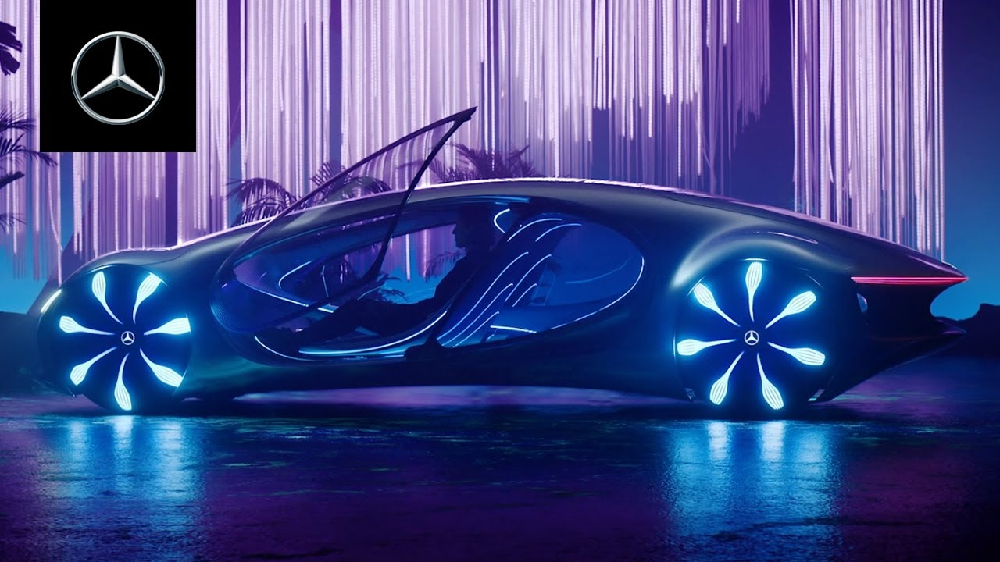

Электромобильность в гармонии с человеком и природой. Экологичная технология
органических аккумуляторов и продуманная операционная стратегия концепт-кара
VISION AVTR.
PREMIER
На выставке CES 2020 был представлен новый концептуальный Mercedes-Benz –
VISION AVTR. Футуристическая концепция представленного электромобиля
объединяет человека, природу и автомобиль уникальным образом.
Ола Каллениус, председатель правления Daimler AG и Mercedes-Benz AG, в
своем выступлении представил концепт-кар вместе с лауреатом премии
Оскар и создателем фильма Аватар, Джеймсом Кэмероном.
Именно философия, созданная культовым режиссером в фантастическом
фильме, стала основой создания VISION AVTR.
«Mercedes-Benz всегда был одним из самых технологичных премиальных брендов.
Теперь пришло время объединить роскошь и экологичность. Ведь только так мы
сможем соответствовать стандартам будущего».

INTERIOR & EXTERIOR
Дизайн VISION AVTR – воплощение
экологичности
Новаторская концепция VISION AVTR
сочетает в себе экологичное
взаимодействие дизайна интерьера,
экстерьера и UX. Весь процесс
проектирования был ориентирован
на конкретный результат –
неповторимый опыт взаимодействия
и восприятия концепт-кара
водителем и пассажирами. Речь шла
о создании уникального
пространства, в котором пассажиры
имеют биометрическую связь друг с
другом, с транспортным средством и
окружающим миром.
Боковое внешнее отверстие проходит
через внутреннюю часть и создаёт
бесконечную петлю, прототипом
которой стала священная связь
между народом На'ви в фильме
Аватар и их естественной средой
обитания.
Также, благодаря удлиненному
дизайну «One Bow» и органической
философии дизайна, VISION AVTR
демонстрирует радикально новый
этап автомобилестроения.
Таким образом, пройдя путь от
концепции осознанности до
уникального слияния человека и
автомобиля, инженерам Mercedes-Benz
удалось создать концептуальный
электромобиль VISION AVTR.
Лаконичным продолжением
внешнего минималистичного
дизайна являются передние сиденья,
выполненные в очень органичной форме,
которая напоминает
лиственные гамаки с планеты
Пандора. Центральная консоль
символизирует Древо Душ, самое
священное место На'ви. Блок
управления – интуитивно понятным
и невероятно функциональным.